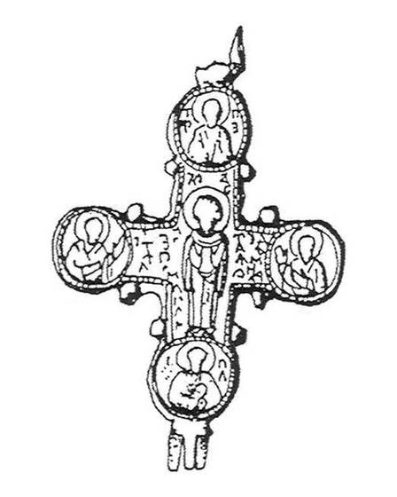
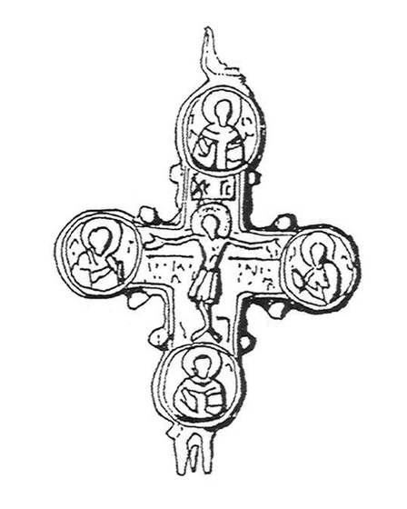

Catalog › CE-0537 · IAH2007-2-5
Encolpion bivalv cu inscripția «Пресвятая Богородица, помагай», Starîi Zbaraj (Рис. 2, 5)
1240 (după B. A. Rîbakov) (1240–1240) · Starîi Zbaraj, regiunea Ternopil, raionul Zbaraj, Ucraina
double-sided reliquary cross (enkolpion); 1240 (după B. A. Rîbakov) (1240–1240); found at Starîi Zbaraj, regiunea Ternopil, raionul Zbaraj, Ucraina.




Identificare
- Categorie
- Encolpion bivalv (relicvar)
- Tehnică
- Turnare în relief
- Dimensiuni
- Î 70 × L 56 mm
Iconografie
- Descriere avers
- Pe valva din față inscripția «Пресвятая Богородица, помагай» (tipul de encolpion cel mai larg cunoscut).
- Inscripții
- Пресвятая Богородица, помагай
- Limba
- Slavonă
Datare și atribuire
- Datare
- 1240 (după B. A. Rîbakov) (1240–1240)
- Centru
- Rusia Kieveană
Descoperire
- Localitate
- Starîi Zbaraj
- Regiune
- regiunea Ternopil, raionul Zbaraj
- Țară
- Ucraina
- Context
- Necunoscut
- Coordonate
- 49.6516° N, 25.7445° E
- Precizia locului
- Doar localitatea
Păstrare și referințe
- Bibliografie
- М. Ягодинська, Нові культові речі з давньоруських пам’яток Західного Поділля, în „Матеріали і дослідження з археології Прикарпаття і Волині”, 11, 2007, p. 346–357 [Ягодинська 2007], p. 347, Рис. 2, 5, reprodusă la Рис. 2, 5 (p. 350).
- Figura
- Рис. 2, 5
- Planșe
- Ягодинська 2007, p. 350
- Observații
- Două valve, fără număr de inventar. Dimensiuni 7,0×5,6 cm fără ureche. Autoarea spune că crucile de acest tip erau răspândite pe tot teritoriul Rusiei Kievene și în afara lui, că au fost lucrate în ateliere kievene și că, după B. A. Rîbakov (1964), se datează în 1240. Colecția piesei nu este precizată. Material: aliaj de cupru, fără precizare suplimentară. Coordonate: ale localității (aproximative), nu date în sursă.
Citare: Corpus Encolpiorum, CE-0537, Encolpion bivalv cu inscripția «Пресвятая Богородица, помагай», Starîi Zbaraj (Рис. 2, 5), --root/piese/IAH2007-2-5/ (accesat 2026-10-20).